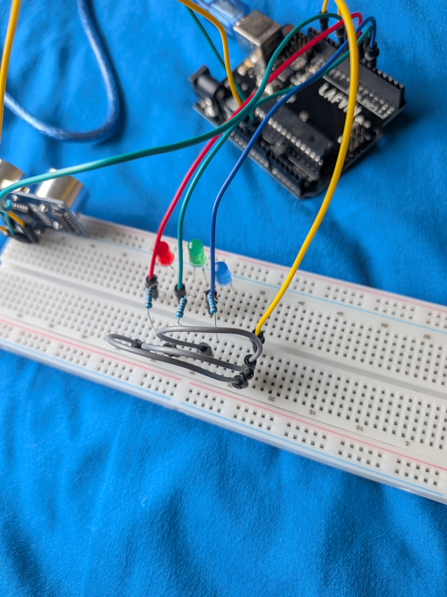
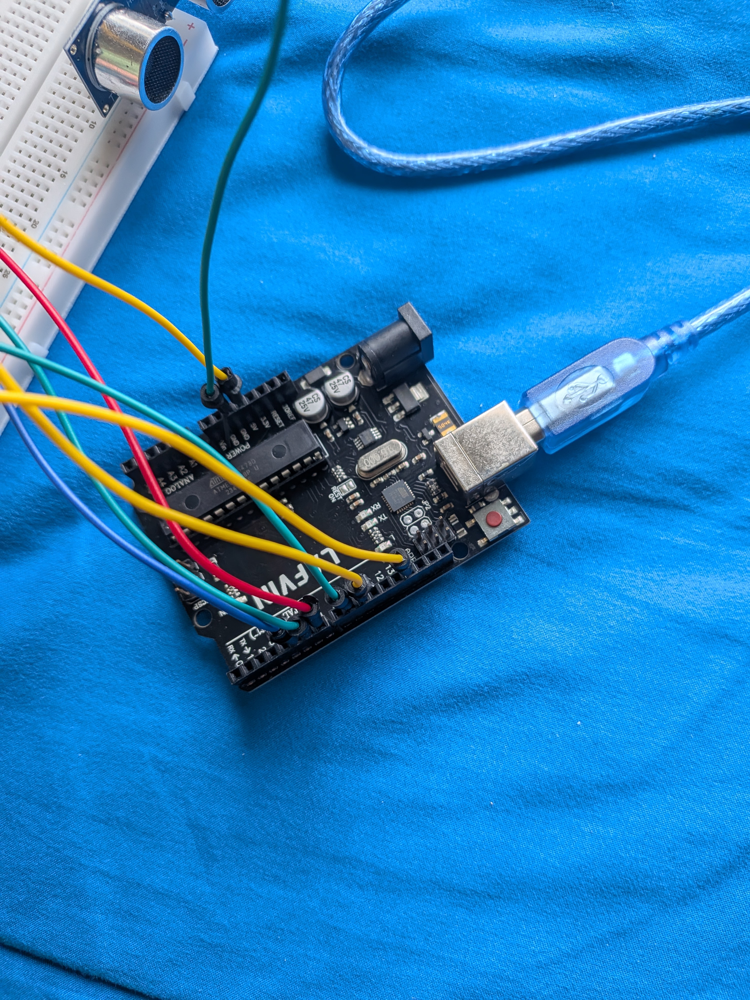

Distance Detector

Description
The distance detector uses an ultrasound detector to determine the distance of how far an object infront of the sensor is from the sensor. If the distance of the object is too far, the blue LED would glow. If the distance of the object is too close, the red LED would glow. If the distance is just right, the green LED would glow.
Media
04/3/2026



Various Screenshots of The Hardware
'Distance Detector Thing (For Computer Systems Class)' on youtubeDetails
Made using Arduino IDE
Programmed with C++
Started and Finished in 04/03/2026
Is made for Computer Systems class at Brigham Young University - Idaho
Relevant Skills
- Programming
- Hardware